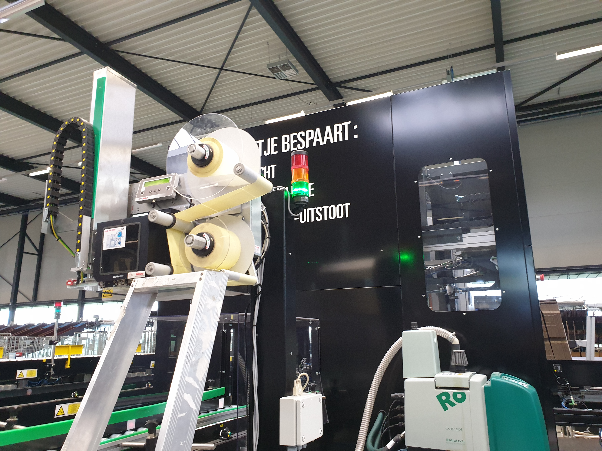

Beroepsbeeld
Hbo i-event
Betabit
Betabit is een softwareleverancier die investeert in young professionals. De cultuur binnen dit bedrijf is erg persoonlijk en betrokken. Betabit programmeert in C#. Voor hun klanten die met Microsoft technologie werken, zijn ze als Microsoft partner gespecialiseerd in Microsoft Azure.
Redkiwi
Redkiwi is een digital agency die als doel heeft digitale impact te creëren voor bepaalde bedrijven moderne en geavanceerde ervaren front-end developers zijn zeer thuis in dit bedrijf. Zij gaven ons een blik in hun cultuur en werksleven door te laten zien hoe zij cookies toepassen voor digital marketing en hoe ze daarmee oude bedrijven zoals bijvoorbeeld NRC hebben geholpen te moderniseren. De sfeer in dit bedrijf klonk redelijk relax en er was in de masterclass ook af en toe tijd voor een grapje.

CGI Nederland
CGI levert high-end bedrijfs- en IT-consultingdiensten, systeemintegratie en IT & business process outsourcing services. Cgi ziet je niet als medewerker maar als een lid. Tijdens het Job Event hebben ze het gehad over gamification. Gamification is het spelenderwijs het gedrag van mensen positief beïnvloeden. Één van de voorbeelden die ze gebruikten, was de NS app, waarin je kan zien in welke coupé er nog stoelen vrij zijn. Hierin zie je een vorm van competitie in terug komen. Mijn persoonlijke favoriet van alle masterclasses die dag.
Q-42
Q-42 is een strategische technologie agency het doel van hun bedrijf is om de juiste oplossing te bedenken en de juiste software daarvoor te bouwen. Ze bieden een sfeer aan die een 'happy place for nerds' moet representeren. Zij gebruiken verschillende programeertalen om applicaties te bouwen, een software engineer zou zich hier helemaal thuis voelen.
Conclusion
Conclusion is een "digital transformation company". Hun bedrijfsdoel is om constant innovatief te zijn dat blijkt ook uit hun slogan: "business done differently". Zij werken met bijvoorbeeld .NET en gebruiken dat om problemen net weer op een iets efficiëntere manier op te lossen. De bedrijfscultuur lijkt heel open en vooral ideal voor het "go-getter" type.
Bedrijvensafari

Een tijd geleden zijn wij op Bedrijvensafari geweest waar wij verschillende IT bedrijven of
bedrijven met een IT-sector bezochten.
Deze bedrijven waren YourSurprise, O'moda en Syntess software. Het doel hiervan was om ons
beroepsbeeld binnen de IT-sector uit te breiden.
Bij O'moda werden we rondgeleid en werd in mijn oog vooral geshowcased hoe zij te werk gaan als het
om de looks van hun website gaat en lieten ze Hun
nieuwe inpakmachine zien ik was redelijk teleurgesteld toen mij een klein antwoord werd gegeven toen
ik vroeg hoe deze machine nou eigenlijk werkte en welke
codeertalen werden toegepast en op welke manier.

Toen verhuisden we verder naar Syntess waar we een introductie over wat het bedrijf nou eigenlijk
doet te horen gekregen en welke features Hun
programma nou eigenlijk bied. Ik heb hier eigenlijk weinig vragen gesteld over waar hun programma
nou eigenlijk nou in gebouwd is en daar heb ik redelijk wat spijt mee.
Wel heb ik dankzij hun goede presentatie toch redelijk wat op gedaan over het bedrijfsleven. Bij
syntess werken er namelijk studenten die van de HZ zelf afkomen, maar ook
student uit bijvoorbeeld Breda die werkt en leert tegelijk dit laat ook zien dat deze wereld heel
toegankelijk is voor nieuwkomers en dat iedereen vooral leert in de praktijk.
Hierna kwam mijn persoonlijke favoriet van de dag: YourSurprise zij hebben namelijk een schitterend
complex fabricatiesysteem voor hun producten.
Het is zo complex omdat elk product wat zij maken bijna altijd anders is en ze lieten dan ook goed
zien in welke software ze hun applicaties maken
en hoe ze deze dan ook weer gebruiksvriendelijk maken.
Ook vond ik hun cultuur het leukst: constant
leren, een heel erg jong bedrijf en ook niet bang om een
impressie achter te laten die niet "optimaal" is. Het gebouw was namelijk nog in de bouw.